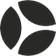

Produktet
Konstruerede substrater, især SOI (silicon-on-insulator): RF-SOI til mobil, Photonics-SOI til optiske transceivere i AI-datacentre og substrater til biler og industri.
Henter den seneste validerede Azure-rapport…

Producerer specialiserede halvledermaterialer. Materialerne bruges som grundlag for chips til blandt andet kommunikation, biler og andre elektroniske systemer.

Konstruerede substrater, især SOI (silicon-on-insulator): RF-SOI til mobil, Photonics-SOI til optiske transceivere i AI-datacentre og substrater til biler og industri.
Chipproducenter og foundries. Omsætningen opdeles i Mobile Communications, Edge & Cloud AI og Automotive & Industrial.
Materialelaget under chippen: substratets egenskaber har betydning for den færdige komponents funktion.
Salg af wafere. I regnskabsåret til marts 2026 kom 309 mio. EUR fra Mobile Communications, 214 mio. fra Edge & Cloud AI og 69 mio. fra Automotive & Industrial.
Chips til mobilradio, AI-datacentre og biler kræver specialiserede siliciumskiver (substrater), der forbedrer ydelse og energiforbrug.
Kilder: Soitec Reports Fiscal 2026 Full-Year Results (pressemeddelelse, PDF) · 2026-05-27
Virksomhedsbeskrivelse gennemgået 2026-10-08. Læs selskabets egen beskrivelse ↗
Hvor i udviklingen er forretningen? Se virksomhedens faser →